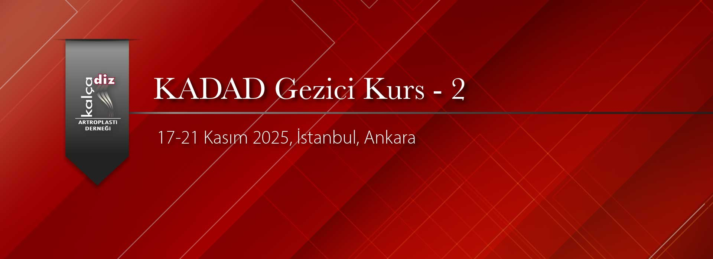

Değerli Meslektaşlarımız,
Gezici Kurs-2 için seçilecek 6 uzman, 3’ü İstanbul, 3’ü Ankara grubunda olmak üzere belirtilen hastanelerde her gün diz ve kalça artroplastisi konusunda tecrübeli hocalarımızla birlikte ameliyatlara girebileceklerdir. Birlikte ameliyata girdikleri duayen hocalara öğrenmek istedikleri konularda sorular sorarak fikir alışverişinde bulunup tecrübelerini artırabileceklerdir.
Ankara Kursiyerleri: Alp Yekta Gökalp, Burak Aydın, Ömer Halit Keskin
İstanbul Kursiyerleri: Hamit Çağlayan Kahraman, Ozancan Biçer, Erol Günen
Yedek Kursiyerler: Ankara-Mesut Demirkoparan, İstanbul-Sebati Başer Canbaz
Başvuru Süresi Dolmuştur.
Kursa Başvuru Koşulları
Kalça Diz Artroplasti Derneği Üyesi Olmak
Kurs yılı da dahil üyelik aidat borcu bulunmamak
35 yaş altında olmak
5 yıl veya daha kısa süreli Ortopedi ve Travmatoloji Uzmanı olmak
Akademik çalışma ve yayın yapmaya hevesli olmak
İstanbul
17 Kasım Pazartesi: Acıbadem Ataşehir Hastanesi. Prof. Dr. Burak Akan, Prof. Dr. Çağatay Uluçay
18 Kasım Salı: Medipol Üniversitesi Hastanesi. Prof. Dr. İbrahim Azboy
19 Kasım Çarşamba: Acıbadem Maslak Hastanesi. Prof. Dr. Remzi Tözün, Prof. Dr. Javad Parvizi, Prof. Dr. İbrahim Tuncay, Prof. Dr. Vahit Emre Özden
20 Kasım Perşembe: Haseki Eğitim ve Araştırma Hastanesi. Prof. Dr. Doğan Atlıhan, Op. Dr. Şahan Dağlar
21 Kasım Cuma: Bursa Medikabil Hastanesi. Prof. Dr. Ömer Faruk Bilgen, Op. Dr. Müren Mutlu
Ankara
17 Kasım Pazartesi: Ankara Tıp İbni Sina Hastanesi. Prof. Dr. Bülent Erdemli , Doç. Dr. Hakan Kocaoğlu
18 Kasım Salı: Hacettepe Üniversitesi Hastanesi. Prof. Dr. Mazhar Tokgözoğlu , Prof. Dr.Bülent Atilla, Prof. Dr. Ömür Çağlar, Op. Dr. Gökhan Ayık
19 Kasım Çarşamba: Bilkent Şehir Hastanesi. Prof. Dr. Bülent Özkurt, Doç. Dr. Ersin Çelen, Doç. Dr. Olgun Bingöl
20 Kasım Perşembe: Çankaya Hastanesi. Prof. Dr. Reha Tandoğan, Prof. Dr. Kerem Başarır, Op. Dr. Asım Kayaalp
21 Kasım Cuma: Adana Acıbadem Ortopedia Hastanesi. Prof. Dr.Emre Toğrul , Prof. Dr. Yaman Sarpel , Doç. Dr. Çağrı Örs, Uzm. Dr. Remzi Çaylak
NOT: 15 Eylül tarihinde web sitemizde açıklanacaktır.
Dernek Başkanı
Prof. Dr. İbrahim Tuncay
Kurs Başkanı
Prof. Dr. Doğan Atlıhan
Saygılarımızla,

Resim Galerisi